मोबाइल ऐप — रोज़ का व्यापार आपके फ़ोन से। हर screen की असली तस्वीर, आसान हिंदी में समझ, और जो button app में दिखेगा वही यहाँ लिखा है। कोई तकनीकी जानकारी की ज़रूरत नहीं।
इस गाइड को कैसे पढ़ें
App की सारी screens English में हैं। इसलिए इस गाइड में समझ हिंदी में है,
पर जो button या field इस तरह हरे रंग में लिखा है — वही शब्द आपको app में दिखेगा और वहीं दबाना/भरना है।
काम का क्रम याद रखें: Party → Deal → Dispatch → Received → Settlement → Payment। यही एक सौदे की पूरी कहानी है। App खुद हर step को अगले से जोड़ता चलता है — आप बस अपना हिस्सा भरते जाइए।
Status के रंग — Dispatch/Settlement में यह दिखते हैं
नीचे की पट्टी — हर screen पर यही 5 tabs
टिप: Parties, Settlements, Godowns, Team, Reports, Settings — ये सब More (•••) के अंदर मिलते हैं। इस गाइड की हर तस्वीर असली app की screenshot है।
शुरुआत — खाता बनाएँ और लॉग इन करेंRegister & Login
पहली बार सिर्फ़ एक बार करना है। इसके बाद हर बार सीधे mobile नंबर और password से खुल जाएगा।
नया business? खाता बनाएँRegister
- Login screen पर
New business? Register →दबाएँ। Company Nameभरें — आपकी फर्म का नाम (जैसे "Raju Rice Traders")।Company Typeचुनें — ज़्यादातर के लिए Trader।Country,State,Districtभरें।What do you mostly trade?में अपना माल चुनें (धान/चावल आदि)।- एक मज़बूत
Passwordरखें (कम-से-कम 8 अक्षर) औरMobile Numberडालें। SEND OTP & CONTINUEदबाएँ → फ़ोन पर आए OTP कोVERIFY OTPसे पक्का करें।
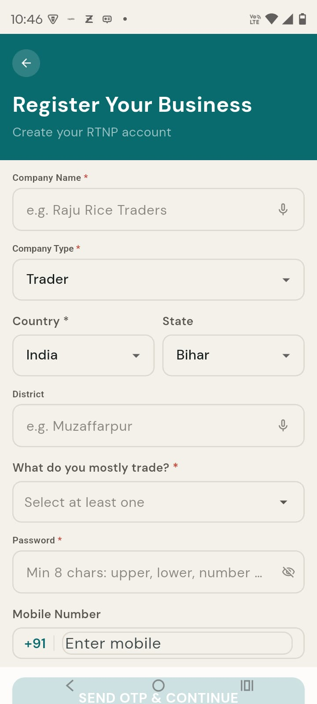
रोज़ लॉग इन करेंLogin
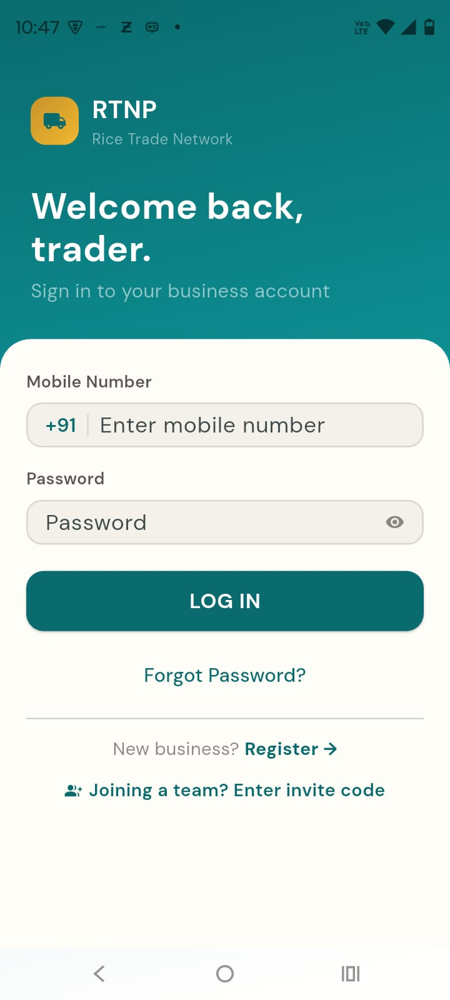
Mobile NumberऔरPasswordभरें, फिरLOG INदबाएँ।- Password भूल गए?
Forgot Password?→ OTP से नया password बना लें। - किसी दूसरे की company में staff के तौर पर जुड़ना है?
Joining a team? Enter invite codeदबाकर मालिक से मिला invite code डालें।
Home screen — एक नज़र में पूरा दिनDashboard
Login के बाद सबसे पहले यही खुलता है। यहीं से सबसे ज़रूरी आँकड़े और shortcut मिलते हैं।
Home पर क्या-क्या दिखता है
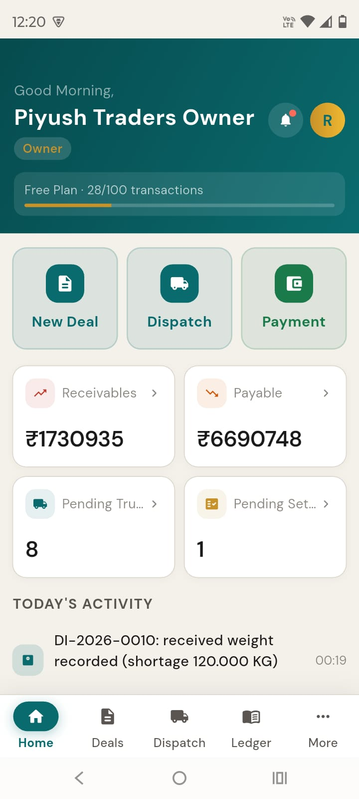
ऊपर के 4 आँकड़ेKPI tiles
- Receivables — मिलों से कितना लेना बाकी
- Payable — transport/commission में कितना देना
- Pending Trucks — रास्ते में कितने truck
- Pending Settle — कितने हिसाब बाकी
किसी भी tile को दबाने पर उसकी पूरी सूची खुल जाती है।
तुरंत कामQuick Actions
New Deal— नया सौदाDispatch— truck भेजनाPayment— पैसा दर्ज करना
Today's Activity में आज का हर काम दिखता रहता है — आप या आपका staff कुछ भी करे।
More → Help → Replay Tutorial से दोबारा देख सकते हैं।अपनी Parties जोड़ेंParties · मिल, वेंडर, ब्रोकर, ट्रांसपोर्टर
जिनके साथ लेन-देन है उन्हें एक बार जोड़ दें। फिर हर deal, dispatch और payment में सिर्फ़ नाम चुनना पड़ेगा — दोबारा टाइप नहीं।
नई party जोड़ेंAdd Party
More → Partiesखोलें, ऊपर+दबाएँ (या deal/dispatch बनाते वक़्त वहीं से नई party जोड़ें)।Party Typeचुनें — Mill · Vendor · Broker · Transporter · Clearance Party · Trader।Party NameऔरMobile Numberभरें (ज़रूरी)।District,Address, और चाहें तोGST NumberवNotesभरें।- ऊपर दाएँ
Save(याSAVE PARTY) दबाएँ।
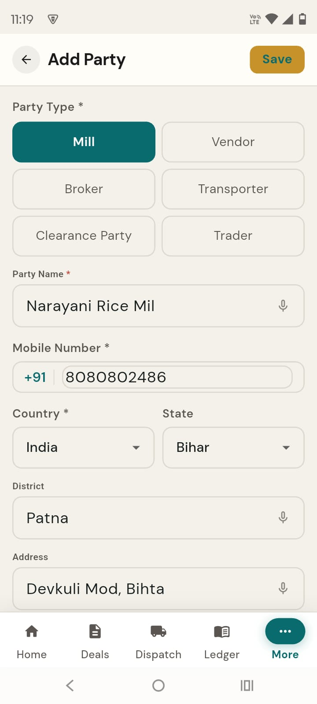
Party का पूरा हिसाब देखेंParty Profile
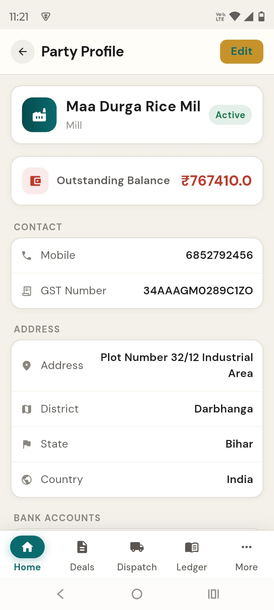
किसी party पर दबाते ही उसका profile खुलता है — यहाँ एक नज़र में:
- Outstanding Balance — इस party का कितना बाकी है (लेना/देना)।
Ledger— पूरा खाता (हर entry, तारीख़ के साथ)।Record Payment— इसी party के लिए पैसा दर्ज करें।Editसे नाम/पता/GST बदलें, Bank Accounts जोड़ें।
Deal (सौदा) बनाएँNew Deal
किससे, कौन-सा माल, किस रेट पर, कितने truck का सौदा हुआ — एक बार दर्ज कर दें। पहला truck निकलते ही रेट lock हो जाता है, बाद में कोई चुपके से नहीं बदल सकता।
नया सौदा दर्ज करेंDeals → +
Dealstab →+, फिरDeal Typeचुनें — Buy (वेंडर से खरीद) या Sell (मिल/seller को बिक्री)।Select Party— वेंडर/seller खोजें और चुनें।Commodityचुनें — app नाम अपने-आप पहचान लेता है (“Matched via canonical name”)।Agreed Rateभरें — ₹ प्रति quintal।Trucksतय करें — – / + या 1/2/5/10/20 के बटन से।- चाहें तो Broker और उसका Commission, तथा
Freight (भाड़ा) Paid By(हम / सामने वाला) चुनें। Review Deal →दबाकर पुष्टि करें।
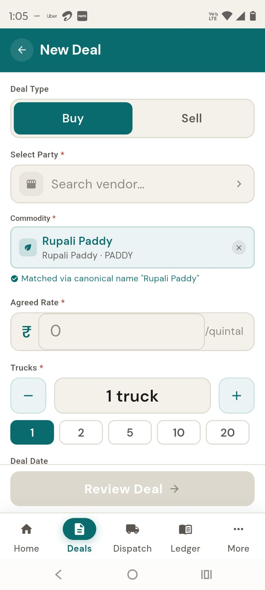
Deal की progress देखेंDeal Detail
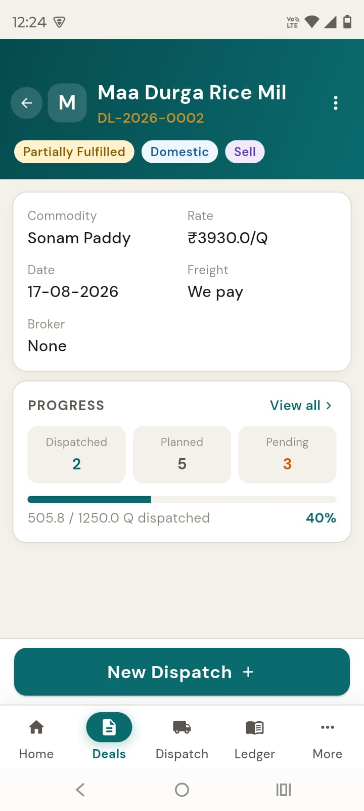
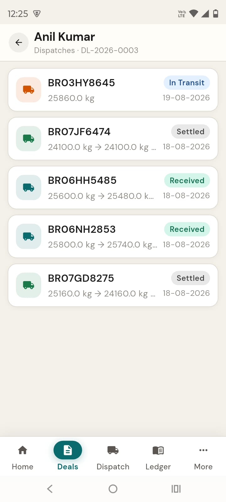
- किसी deal पर दबाते ही ऊपर status दिखता है — जैसे Partially Fulfilled, साथ में Domestic/Sell।
- PROGRESS — कितना Dispatched / Planned / Pending (quintal) और % पट्टी।
View allसे हर truck देखें। New Dispatch— यहीं से अगला truck भेजें।- सौदा पूरा हो जाए तो
Close Dealसे बंद कर दें।
Edit (सिर्फ़ Owner/Trade Manager)।Truck भेजें — DispatchNew Dispatch · Bill of Supply (चालान) अपने-आप
माल लोड होते ही dispatch बनाइए। इसी वक़्त Bill of Supply (चालान) का PDF खुद बन जाता है, freight (भाड़ा) का हिसाब खुल जाता है, और deal की progress बढ़ जाती है।
नया Dispatch बनाएँDispatch → +
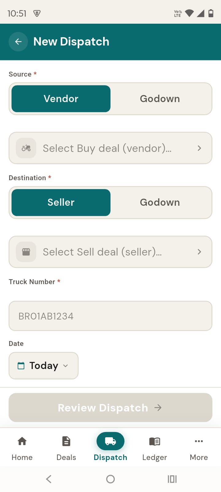
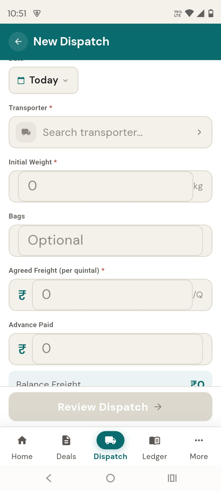
Sourceचुनें — Vendor (सीधे वेंडर से) या Godown (अपने गोदाम से)। फिर उससे जुड़ा deal चुनें।Destinationचुनें — Seller (मिल को) या Godown (अपने गोदाम में)।Truck Numberडालें (जैसे BR01AB1234) औरDateरखें (Today पहले से चुना है)।Transporterखोजें — यह तभी माँगा जाता है जब भाड़ा आप दे रहे हों।Initial Weight(kg में) और चाहें तोBagsभरें।Agreed Freight (per quintal)औरAdvance Paidभरें (advance कुल भाड़े से ज़्यादा नहीं हो सकता)।Review Dispatch →दबाकर पुष्टि करें।
Truck रवाना करें और सूची देखेंMark In Transit · Dispatch list
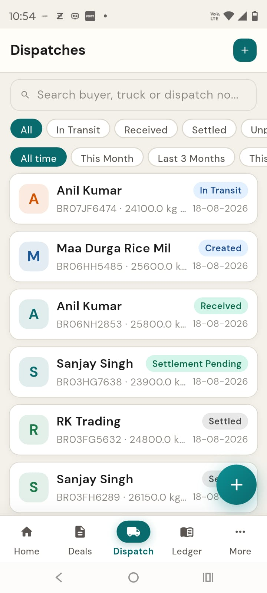
- Dispatch बनने पर status Created रहता है। किसी dispatch को खोलकर
Mark In Transitदबाएँ जब truck चल पड़े → In Transit। - कभी भी
Download Bill of Supplyसे चालान का PDF निकालकर ड्राइवर को दें या WhatsApp कर दें। Dispatchसूची में ऊपर search और All / In Transit / Received / Settled तथा समय के filter हैं — कोई भी truck तुरंत ढूँढ लें।
माल पहुँचा — असली वजन दर्ज करेंRecord Received Weight
दूसरी तरफ़ truck पहुँचने पर वहाँ का असली वजन डालिए। भेजे और पहुँचे वजन का फ़र्क़ (shortage/कमी) app खुद निकाल देता है — गिनती की माथापच्ची ख़त्म।
Received weight भरें
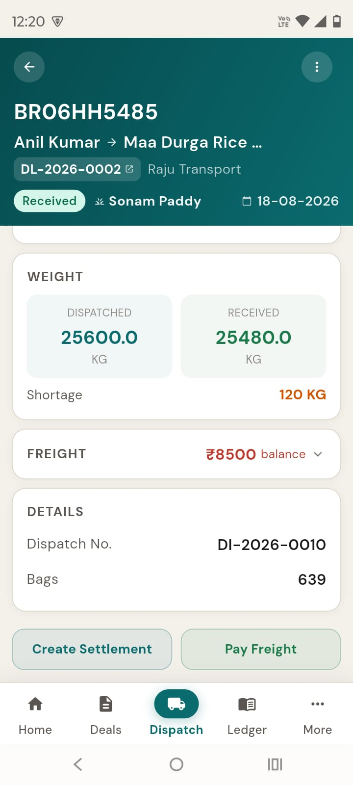
Dispatchtab से वह truck खोलें जो In Transit है।- नीचे
Record Received Weightदबाएँ। - खुलने वाली शीट में
Weight (KG)डालें, चाहें तोRemarks, फिरRECORDदबाएँ।
हिसाब चुकता करें — SettlementCreate · Dispute · Accept
मिल की तरफ़ से कोई दावा (claim) या कटौती (deduction) — नमी, टूटन, तौल, उतराई — हो तो यहाँ जोड़ें। सहमति न हो तो Dispute, बात बने तो Accept। Accept होते ही पक्का बिल बनता है।
Settlement बनाएँ और सूची देखेंCreate Settlement
- जो dispatch Received है उसे खोलकर
Create Settlementदबाएँ। Final WeightऔरFinal Rateजाँच लें (रेट बदलें तोRate Change Reasonलिखें)।- CLAIMS में
Add Claimसे दावा जोड़ें — जैसे Moisture, Broken Grain — प्रकार, विवरण, रकम। - FINANCIAL DEDUCTIONS में
Add Deductionसे कटौती जोड़ें — जैसे Weighing/Unloading charges। - नीचे FINAL AMOUNT देखकर
CREATE SETTLEMENTदबाएँ।
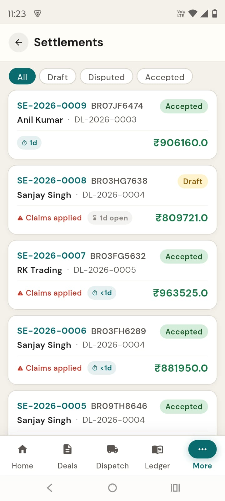
Settlement की पूरी जानकारीSettlement Detail
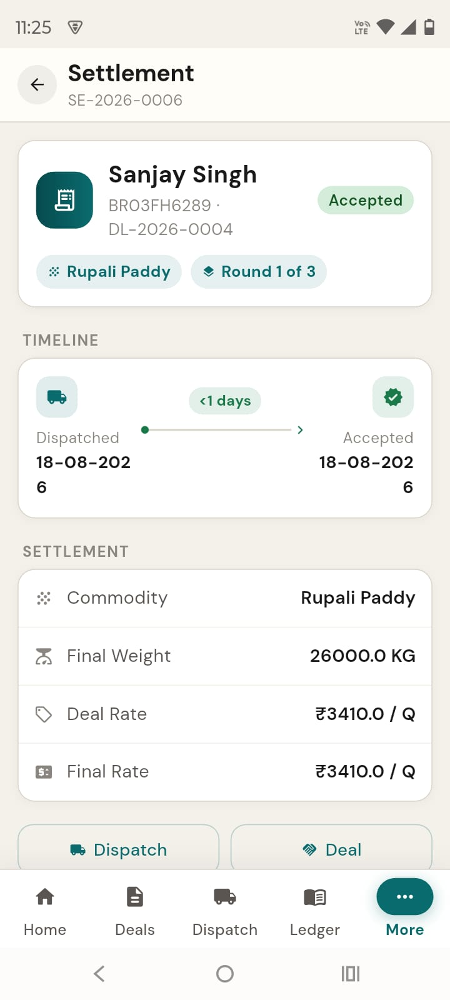
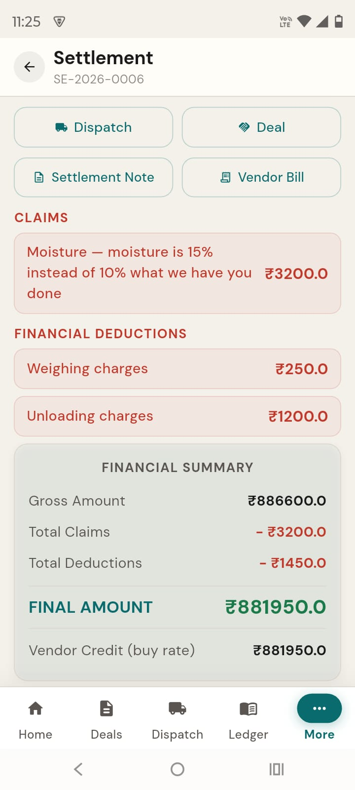
- ऊपर Round 1 of 3 दिखता है — मोल-भाव के लिए तीन दौर तक चल सकता है।
- Draft में
Acceptसे मान लें, याDisputeसे कारण (कम-से-कम 10 अक्षर) लिखकर एतराज़ करें। सामने वालाReviseकर सकता है। - FINANCIAL SUMMARY: Gross − Claims − Deductions = FINAL AMOUNT। नीचे Vendor Credit और Per-truck Profit/Loss भी दिखता है।
अपने-आप बनने वाले कागज़Auto-generated PDFs
हर सौदे पर ज़रूरी कागज़ app खुद बना देता है — dispatch या settlement की screen से Download करके छापें या WhatsApp पर भेजें:
Bill of Supply (चालान)
Dispatch बनते ही — माल, बोरे, वज़न, रेट, रकम; ड्राइवर के साथ भेजने के लिए।
Settlement Note
प्रस्तावित हिसाब — भेजा/पहुँचा वज़न, shortage, claims और net देय। यह अंतिम बिल नहीं है।
Vendor Bill
Accept होने पर अंतिम खरीद बिल — claims व deductions घटाकर Net Payable। (इस बिल पर GST नहीं लगता।)
Inward Advice
गोदाम में माल आने की सूचना/पर्ची — dispatch से download।
Ledger & Payments — खाता-बही और भुगतानLedger · Record Payment
किसका कितना बाकी है — हर वक़्त एक नज़र में। पैसा आए या जाए, बस दर्ज कर दें; हर party का खाता अपने-आप अपडेट रहता है।
बकाया देखें और payment दर्ज करें
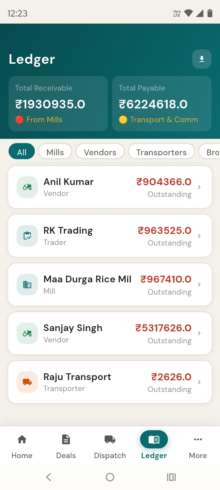
Ledgertab खोलें — ऊपर Total Receivable (लेना) और Total Payable (देना)।- नीचे हर party का Outstanding। All / Mills / Vendors / Transporters / Brokers से छाँटें।
- किसी party पर दबाकर उसका पूरा statement देखें, फिर
+ Record Paymentदबाएँ। Ledger Party, रकम और payment mode भरें (cheque हो तो Cheque Number/Bank), फिरReview Transaction।- statement को
Export as PDFयाExport as CSVसे निकालकर किसी को भेज दें।
Statement और Payment form — नज़दीक सेLedger Detail · Record Payment
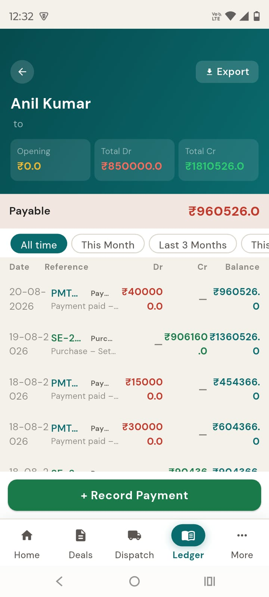
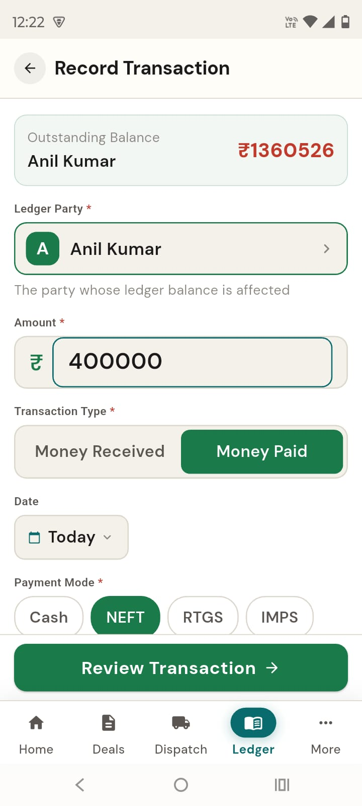
- Statement में हर entry दिखती है — Opening, Total Dr (नाम), Total Cr (जमा), और नीचे बकाया (Payable/Receivable)। ऊपर
Exportऔर समय के filter हैं। - Payment form में
Ledger PartyऔरAmountभरें। Transaction Typeचुनें — Money Received (पैसा आया) या Money Paid (पैसा गया)।Payment Modeचुनें (Cash / NEFT / RTGS / IMPS / UPI / Cheque), फिरReview Transaction →।
Godown Stock — कहाँ कितना मालInventory
अलग से स्टॉक रजिस्टर रखने की ज़रूरत नहीं। हर खरीद और हर dispatch के साथ गोदाम का हिसाब खुद घटता-बढ़ता रहता है।
स्टॉक देखें और गोदाम जोड़ेंGodowns · Godown Inventory
- पहले
More → Godownsसे अपने गोदाम जोड़ें —Godown Name(जैसे “G1 — Patna”) औरLocation। - अब
More → Godown Inventoryखोलें। - ऊपर TOTAL ON HAND (कुल स्टॉक, quintal में) और अनाज-वार बँटवारा दिखता है।
- नीचे हर गोदाम में कौन-सा अनाज कितना — साफ़-साफ़।
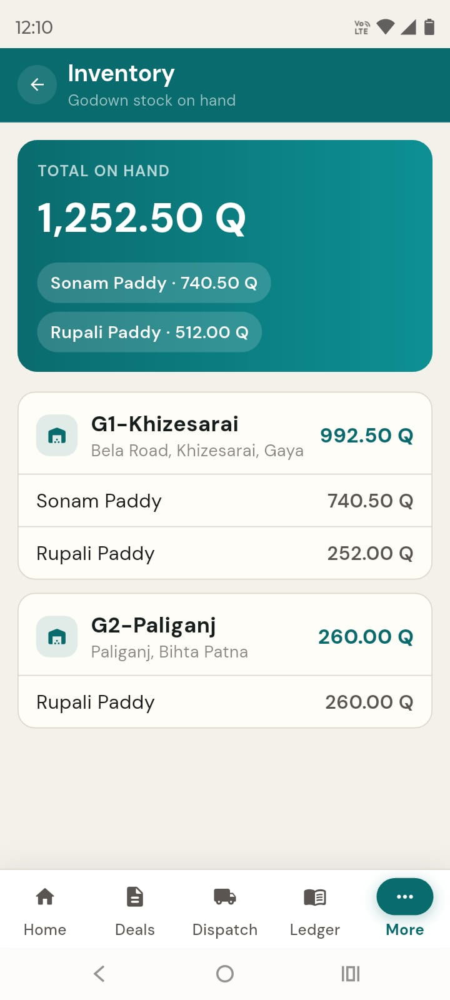
आपकी टीम — कौन क्या कर सकता हैTeam & Roles
हर आदमी को उसके काम भर का access दें। रेट, deal बंद करना और पैसे का ज़िम्मा भरोसे के हाथ में; बाकी सिर्फ़ एंट्री।
staff को बुलाएँInvite Member
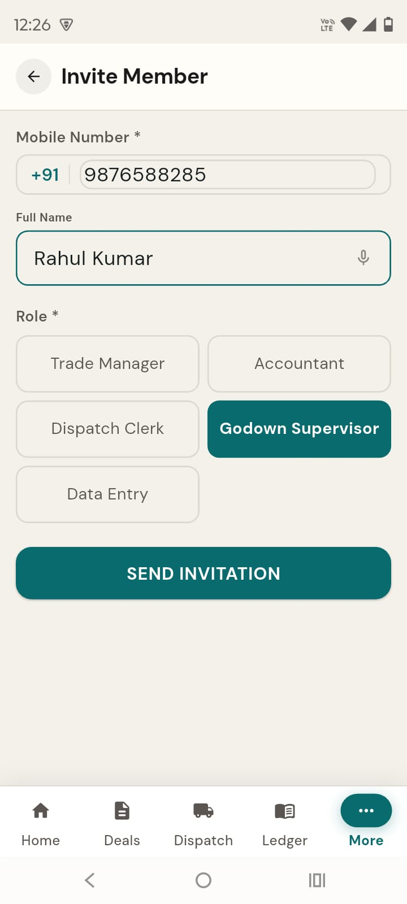
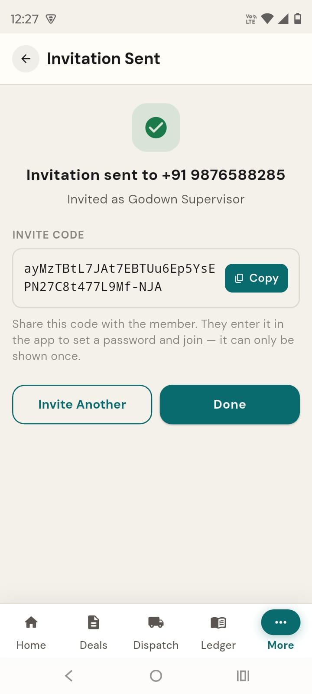
More → Team Membersखोलें, फिरInvite Member।- उसका
Mobile Number,Full Name, औरRoleचुनकरSEND INVITATIONदबाएँ। - बना हुआ INVITE CODE
Copyकरके उसे भेज दें — यह सिर्फ़ एक बार दिखता है। - वह Login screen पर “Joining a team?” से यह code डालकर अपना password बनाकर जुड़ जाएगा।
6 Roles — किसे क्या accessPermission Matrix
| काम | कौन कर सकता है |
|---|---|
| Party जोड़ना/बदलना | Owner, Trade Manager |
| Deal बनाना | Owner, Trade Manager, Data Entry |
| Dispatch बनाना/चलाना | Owner, Trade Manager, Dispatch Clerk, Data Entry |
| Dispatch रद्द करना | Owner, Trade Manager |
| Settlement — Accept/Dispute/Revise | Owner, Trade Manager |
| Payment / Freight दर्ज करना | Owner, Accountant (Trade Manager नहीं) |
| गोदाम संभालना | Owner, Trade Manager, Godown Supervisor |
| Company Profile बदलना | सिर्फ़ Owner |
| टीम role बदलना/हटाना | सिर्फ़ Owner |
| Outstanding (truck P/L) Report | Owner, Trade Manager |
मालिकOwner
पूरा access — आख़िरी फ़ैसला इन्हीं का।
मैनेजरTrade Manager
रोज़ का सारा व्यापार — पर payment नहीं।
मुनीमAccountant
पैसे का हिसाब — payment और ledger।
डिस्पैच क्लर्कDispatch Clerk
truck का काम — dispatch बनाना/चलाना।
डेटा एंट्रीData Entry
deal और dispatch दर्ज करना।
गोदाम सुपरवाइज़रGodown Supervisor
गोदाम और स्टॉक संभालना।
Reports — मुनाफ़ा और रिकॉर्डReports
More → Reports में मिलते हैं।
Outstanding ReportPer-truck P/L
हर truck का नफ़ा/नुक़सान — बिक्री रकम − वेंडर खरीद − commission − भाड़ा। Vendor → Seller के accepted settlements पर।
Audit Trailपूरा इतिहास
app में हुआ हर काम, तारीख़ के साथ। ज़रूरी (Critical) बदलाव अलग से चिह्नित। “किसने क्या किया” का पूरा रिकॉर्ड।
Beta testing — क्या ध्यान रखेंFor Beta Testers
यह शुरुआती (beta) version है। आपका इस्तेमाल और सुझाव ही इसे बेहतर बनाएँगे।
कैसे test करें — सुझाया रास्ता
- अपना असली एक-दो सौदा पूरा चलाकर देखें: Party → Deal → Dispatch → Received → Settlement → Payment।
- हर step पर देखें — क्या हिसाब सही जुड़ा? Ledger और Stock सही बदले? PDF सही बने?
- अलग-अलग role वाले staff से उनका हिस्सा करवाकर देखें कि access ठीक है।
- जहाँ कुछ अटके, समझ न आए, या ग़लत लगे — नोट कर लें (नीचे बताए तरीके से)।
दिक़्क़त कैसे बताएँReport an issue
- क्या करने जा रहे थे (कौन-सी screen, कौन-सा button)।
- क्या हुआ बनाम क्या होना चाहिए था।
- हो सके तो उसी वक़्त का screenshot लें (फ़ोन के दिखते नंबर/पैसे भी शामिल)।
- कौन-सा role था और कब — ताकि जल्दी पकड़ में आए।
अभी की सीमाएँ — जान लेंKnown beta limits
- Subscription/Upgrade अभी काम नहीं करता — “Upgrade” दिखता है पर चालू नहीं। इसे test न करें।
- Dispatch में ड्राइवर का नाम/नंबर दर्ज नहीं होता — सिर्फ़ truck number।
- अलग से notifications inbox नहीं है — सूचनाएँ dispatch की screen पर (“NOTIFICATIONS SENT”) दिखती हैं।
- Internet न हो तो ऊपर “Offline — showing saved data” दिखता है — तब सिर्फ़ पुराना data पढ़ सकते हैं, नया दर्ज नहीं।
- आवाज़ से भरना (🎤) अभी मुख्य रूप से Add Party पर है।
वेब पोर्टल — बड़े काम के लिए कंप्यूटर/लैपटॉप की बड़ी screen पर। यह वही RTNP है, वही data — बस office staff के लिए बना हुआ। आपकी field टीम (गोदाम, dispatch) मोबाइल ऐप पर ही रहती है; office में बैठे लोग यहाँ से एक साथ ज़्यादा देख और कर सकते हैं।
खोलिए: browser में portal का पता टाइप करें और अपने उसी mobile नंबर व password
से लॉग इन करें जो मोबाइल ऐप में है। दोनों एक ही खाते से चलते हैं।
पोर्टल की बनावट — एक बार समझ लें
पूरे portal में बाईं ओर एक पट्टी (sidebar) हमेशा दिखती है — यही आपका मुख्य menu है। ऊपर top bar में search, company का नाम और आपका नाम/role रहता है। बीच का बड़ा हिस्सा उस screen का काम दिखाता है जिस पर आप हैं।
काम का क्रम वही है: Party → Deal → Dispatch → Received → Settlement → Payment। पोर्टल हर step को अगले से खुद जोड़ता है — आप बस अपना हिस्सा भरते जाइए।
बाईं पट्टी (Sidebar) — यहीं से हर जगह जाएँ
| Menu | क्या मिलता है |
|---|---|
| Dashboard | पूरे दिन/महीने का सार, ज़रूरी आँकड़े और shortcut |
| Deals | सारे सौदे — बनाना, देखना, बंद करना |
| Dispatches | सारे truck — भेजना, रवाना करना, वजन दर्ज |
| Settlements | हिसाब — claims, dispute, accept |
| Ledger | हर party का खाता — कौन-कितना बाकी |
| Payments | पैसा आया/गया दर्ज करना |
| Parties | मिल, वेंडर, ब्रोकर, ट्रांसपोर्टर |
| Inventory | गोदाम में कहाँ कितना माल |
| Commodities | आपके माल (अनाज) की सूची |
| Reports | per-truck मुनाफ़ा और CSV export |
| Audit Trail | किसने क्या किया — पूरा इतिहास |
| Team | staff बुलाना, role देना/बदलना |
| Settings | company की जानकारी, bank, subscription |
मोबाइल से क्या अलग है — जान लें
काम वही है, पर बड़ी screen के कुछ फ़ायदे यहीं मिलते हैं:
- एक साथ ज़्यादा दिखता है — detail screens में बीच में मुख्य जानकारी और दाईं ओर side-panel (जैसे Freight, Documents, Actions)।
- Excel/CSV export — Ledger और Reports से एक click में
Export CSV। (मोबाइल में यह सीमित है।) - Company switcher — top bar में company का नाम; एक से ज़्यादा company हों तो वहीं से बदलें।
- PDF (Bill of Supply आदि) एक नए browser tab में खुलते हैं — वहाँ से छापें या save करें।
- Audit Trail में
← Prev/Next →से पन्ने बदलें। - ध्यान दें: top bar का बड़ा
Search deals, trucks, parties…box अभी सिर्फ़ दिखावे का है — असली search हर screen के अपने search box में है।
लॉग इन करेंLogin · Sign In
वही mobile नंबर और password जो मोबाइल ऐप में है। पहली बार खाता मोबाइल ऐप से बनता है या invite code से जुड़ते हैं।
पोर्टल में घुसेंSign In
- browser में portal का पता खोलें —
Welcome backवाली screen दिखेगी। Mobile number(10 अंक) औरPasswordभरें।- अपने ही कंप्यूटर पर हों तो
Keep me signed inरहने दें — बार-बार लॉग इन नहीं करना पड़ेगा। साझा/दूसरे कंप्यूटर पर इसे हटा दें। Sign Inदबाएँ। आप सीधे Dashboard पर पहुँच जाएँगे।
Forgot password? दबाएँ → Send OTP से फ़ोन पर code मँगाएँ → OTP और New password भरकर Reset Password। एक से ज़्यादा company में हैं तो लॉग इन के बाद Choose a company दिखेगा — अपनी company चुन लें।Dashboard — एक नज़र में पूरा कारोबारDashboard
लॉग इन के बाद यही सबसे पहले खुलता है। ज़रूरी आँकड़े, आज की गतिविधि और तुरंत काम के shortcut यहीं हैं।
Dashboard पर क्या-क्या है
ऊपर के 4 आँकड़ेKPI tiles
- Mill Receivables — मिलों से कितना लेना बाकी
- Freight Payable — भाड़े में कितना देना (
{n} pending) - Open Deals — कितने सौदे चालू
- Pending Settlements — कितने हिसाब बाकी
तुरंत कामQuick Actions
New Deal— नया सौदाNew Dispatch— truck भेजनाRecord Payment— पैसा दर्जView Ledger— खाता खोलें
No activity yet today)। नीचे This Month में महीने का Settled, Payments और Cap used।Free Plan — X of 100 transactions used की पट्टी दिखती है। Upgrade Plan अभी self-service नहीं — यह sales से संपर्क का mail खोलता है।Deals — सौदे बनाएँ और देखेंDeal Register
किससे, कौन-सा माल, किस रेट पर, कितने truck — एक बार दर्ज करें। पहला truck निकलते ही रेट lock हो जाता है।
सारे सौदे देखेंDeals list
- बाईं पट्टी से
Dealsखोलें। ऊपर search boxSearch deals, mills, commodities…से कोई भी सौदा ढूँढें। - छाँटने के लिए chips:
All·Open·Partially Fulfilled·Completed·Closed। - हर पंक्ति में Deal No., party/commodity, Direction (Buy/Sell), status, भाड़ा (
We pay/They pay), Rate और Progress (कितने truck भेजे/तय) दिखता है। - किसी भी पंक्ति पर click करके उस सौदे की पूरी जानकारी खोलें।
नया सौदा बनाएँNew Deal
- ऊपर दाएँ
New Dealदबाएँ। Deal Typeचुनें — Buy (वेंडर से खरीद) या Sell (मिल/trader को बिक्री)। फिरDeal DateऔरTrade Type(Domestic/Export)।Freight Paid By— Self (भाड़ा आप देंगे) या Counterparty (सामने वाला)।- party चुनें — Buy में
Vendor (Seller to you), Sell मेंBuyer (Mill / Trader)। Commodityखोजकर चुनें,Agreed Rate (₹/Quintal)भरें, औरPlanned Trucksतय करें (1/2/5/10/20 के बटन या −/+)।- ब्रोकर हो तो
Add a brokerपर टिक करकेBroker,Commission MethodवCommission Valueभरें। चाहें तोNotes। Create Dealदबाएँ — सौदा बन जाएगा और खुल जाएगा।
सौदे की progress देखें और बंद करेंDeal detail · Close Deal
- Progress card में
Dispatched/Planned/Pendingऔर % पट्टी दिखती है। - यहीं से अगला truck भेजने के लिए ऊपर
New Dispatchदबाएँ। - सौदा पूरा हो जाए तो
Close Dealसे बंद करें — यह वापस नहीं खुलता, इसलिए पुष्टि माँगी जाती है।
Dispatches — Truck भेजें और रास्ता देखेंDispatches · Bill of Supply अपने-आप
माल लोड होते ही dispatch बनाइए। Bill of Supply (चालान) का PDF खुद बन जाता है, भाड़े का हिसाब खुलता है, और सौदे की progress बढ़ती है।
सारे truck देखेंDispatches list
search Search truck or dispatch no… और chips: All · Created · In Transit · Received · Settlement Pending · Settled।
नया Dispatch बनाएँNew Dispatch
- ऊपर
New Dispatchदबाएँ। Source — Buy Deal (Vendor)चुनें (किस खरीद से माल जा रहा है) औरDestination — Sell Deal (Buyer)(किस बिक्री के लिए)।Truck Numberडालें (जैसे BR01AB1234) औरDispatch Dateरखें।Transporterखोजें (भाड़ा आप दे रहे हों तब ज़रूरी)। Export सौदे मेंClearance Partyभी माँगा जाता है।Weight (KG)और चाहें तोNumber of Bagsभरें।Agreed Freight (₹/Quintal)औरAdvance Paid (₹)भरें। चाहें तोChallan / E-way NumberऔरRemarks।Create Dispatchदबाएँ।
Truck रवाना, वजन और भाड़ा — Dispatch detailJourney · Weight · Freight · Documents
- truck चल पड़े तो
Mark In Transitदबाएँ → status In Transit। - माल पहुँचने पर
Record Received WeightदबाकरReceived Weight (KG)भरें औरSave Weight। भेजे और पहुँचे वजन का फ़र्क़ (Shortage) app खुद निकाल देता है। - दाईं ओर Freight Contract में
Agreed Freight,Advance Paid,Balanceदिखता है। बकाया भाड़ा देने के लिएPay Freight। - Documents से
Bill of Supply(और पहुँचने परInward Advice) PDF नए tab में खोलकर छापें/भेजें। - ग़लती से बना दिया?
Cancel Dispatchमें कारण लिखकर रद्द करें।
Settlements — हिसाब चुकता करेंCreate · Dispute · Accept
मिल की तरफ़ से कोई दावा (claim) या कटौती (deduction) — नमी, टूटन, तौल, उतराई — हो तो जोड़ें। सहमति न हो तो Dispute, बात बने तो Accept। Accept होते ही पक्का बिल बनता है और ledger चढ़ता है।
सारे हिसाब देखेंSettlements list
Create Settlement दबाएँ।हिसाब की पूरी जानकारीSettlement detail
- ऊपर
Round 1 of 3दिखता है — मोल-भाव तीन दौर तक चल सकता है। - बीच में Quality Claims और Deductions; दाईं ओर Settlement Summary:
Gross Amount−Total Claims−Deductions=Final Amount। नीचेNet P/L (per truck)भी। - सहमति हो तो
Accept; न हो तोDisputeमें कारण (कम-से-कम 10 अक्षर) लिखें। सामने वालाReviseकर सकता है। - Documents से
Settlement Noteऔर (वेंडर वाले सौदे में)Vendor BillPDF निकालें।
Settlement बनाएँ (dispatch से)Create Settlement
- जो dispatch Received है उसे खोलकर
Create Settlementदबाएँ। - Received at Mill में
Accepted Qty (Q)औरFinal Rate (₹/Q)जाँचें (रेट बदलें तोRate Change Reasonलिखना ज़रूरी)।Final Weight (KG)पहले से भरा और बदला नहीं जा सकता। - Quality Claims में
Add Claimसे दावा जोड़ें (Moisture, Broken Grain आदि)। Financial Deductions मेंAdd Deductionसे कटौती (Unloading/Weighing charges आदि)। - वेंडर वाले सौदे में
Claim passed to vendorतय करें — पूरा दावा वेंडर पर डालें या कुछ हिस्सा खुद सहें। - दाईं ओर Settlement Summary में Final Amount देखकर
Create Settlementदबाएँ।
अपने-आप बनने वाले कागज़Auto-generated PDFs
Bill of Supply (चालान)
Dispatch बनते ही — माल, बोरे, वज़न, रेट; ड्राइवर के साथ भेजने के लिए।
Inward Advice
माल पहुँचने की पर्ची — dispatch की Documents से।
Settlement Note
प्रस्तावित हिसाब — वज़न, shortage, claims और net देय।
Vendor Bill
Accept होने पर अंतिम खरीद बिल — claims/deductions घटाकर Net Payable।
Ledger & Payments — खाता-बही और भुगतानLedger · Record Transaction
किसका कितना बाकी — हर वक़्त एक नज़र में। बड़ी screen पर बाएँ party की सूची, दाएँ उसका पूरा statement साथ दिखता है।
बकाया और statement देखेंLedger
- बाईं सूची में
Search parties…से party ढूँढें और चुनें (पहली party अपने-आप खुल जाती है)। - दाईं ओर
Opening,Total Dr,Total Cr,Closingऔर हर entry (Date / Reference / Debit / Credit / Balance) दिखती है। - समय से छाँटें:
All time·This Month·Last 3 Months। - ऊपर
Export CSVसे यह statement Excel/CSV में निकालकर किसी को भेज दें।
पैसा आया/गया दर्ज करेंRecord Transaction
- Ledger में ऊपर
Record Paymentदबाएँ (या बाईं पट्टी सेPayments)। Transaction Typeचुनें — Money Received (पैसा आया) या Money Paid (पैसा गया)।Ledger PartyऔरAmount (₹)भरें,Dateरखें।Payment Modeचुनें (Cash / NEFT / RTGS / IMPS / Cheque / UPI / Other)। Cheque हो तोCheque NumberऔरBank Name।- चाहें तो
Reference Number/Notes, फिरRecord Payment।
Parties — मिल, वेंडर, ब्रोकर, ट्रांसपोर्टरParties
जिनके साथ लेन-देन है उन्हें एक बार जोड़ दें। फिर हर deal, dispatch और payment में सिर्फ़ नाम चुनना पड़ेगा।
party की सूचीParties list
chips: All · Mills · Vendors · Transporters · Brokers · Traders · Clearance। हर पंक्ति में नाम, type, mobile, location और Outstanding।
नई party जोड़ेंAdd Party
- ऊपर
Add Partyदबाएँ। Party Typeचुनें (Rice Mill / Vendor / Broker / Transporter / Clearance Party / Trader), फिरMobileऔरParty Name(ज़रूरी)।Country/State/District,Address, और चाहें तोGST NumberवNotes।- पुराना हिसाब चला आ रहा है? Opening Balance में
Amount (₹)वAs onभरें औरThey owe you/You owe themचुनें। न हो तो खाली छोड़ दें। Add Partyदबाएँ।
party का पूरा हिसाब और bankParty detail
- ऊपर से
View Ledger(पूरा खाता),Record Payment, याEdit। - Bank Accounts में
Addसे खाता जोड़ें; किसी कोSet primaryयाRemoveकरें। - बंद/चालू करने के लिए
Deactivate Party/Reactivate Party— बंद करने पर पुराना ledger और पुराने deal/dispatch पूरी तरह सुरक्षित रहते हैं, बस वह party अब किसी नए deal या dispatch में नहीं चुनी जा सकती (नीचे देखें)।
बंद party से नया deal/dispatch नहीं बनताInactive parties are blocked from new transactions
Transporter में खोजने पर — No parties foundयही नियम हर picker पर लागू होता है — Deal के Vendor/Buyer/Broker और Dispatch के Transporter/Clearance Party सब में, बंद party की जगह सिर्फ़ चालू parties दिखती हैं।
Inventory & Commodities — स्टॉक और मालGodown stock · Commodity list
गोदाम का हिसाब हर खरीद और dispatch के साथ खुद घटता-बढ़ता है। और अपने माल (अनाज) की सूची एक बार सेट कर लें।
गोदाम में कहाँ कितना मालInventory
- ऊपर
Total on hand(कुल स्टॉक, quintal में) और अनाज-वार। - नीचे हर गोदाम में कौन-सा अनाज कितना।
नया गोदाम — शुरुआती स्टॉक के साथAdd Godown · Opening Grain Stock
- ऊपर
Add Godownदबाएँ। Name(ज़रूरी) और चाहें तोLocationभरें।- पुराना गोदाम है और उसमें पहले से माल पड़ा है? Opening Grain Stock में
Add Grainदबाकर अनाज खोजें-चुनें औरQty (Q)भरें — ज़रूरत हो तो कई अनाज की पंक्तियाँ जोड़ें। नए/खाली गोदाम के लिए यह हिस्सा खाली छोड़ दें। Addदबाएँ — गोदाम अपने शुरुआती स्टॉक के साथ फ़ौरन Inventory में दिख जाता है।
गोदाम बंद/चालू करनाDeactivate · Reactivate Godown
Deactivate, बंद में Reactivate, और नाम के आगे "· inactive"- गोदाम कार्ड के नीचे
DeactivateयाReactivateदबाएँ, फिर पक्का करें। - बंद करने के लिए गोदाम खाली होना ज़रूरी है — माल पड़ा हो तो
Deactivateबटन धूसर (disabled) रहेगा; पहले वह माल दूसरे गोदाम में dispatch करें या निकाल दें। - बंद गोदाम का पुराना रिकॉर्ड (पिछला स्टॉक इतिहास) सुरक्षित रहता है — बस नए dispatch के गोदाम picker में अब नहीं दिखेगा।
Godown सूची से हटा देता है, ताकि कोई ग़लती से बंद गोदाम में/से माल न भेज दे।अपने माल की सूचीCommodities
Add CommodityदबाकरSearch the master catalogमें नाम/कोड खोजें औरActivateकरें।- कोई अलग नाम रखना हो तो
Renameसे Display Name सेट करें। - न चाहिए तो
Deactivate(सिर्फ़ Owner), दोबारा चाहिए तोReactivate।
Reports & Exports — मुनाफ़ा और डेटा निकालेंReports
हर truck का नफ़ा/नुक़सान एक जगह, और सारे रजिस्टर एक click में Excel/CSV में।
Per-truck मुनाफ़ा और register export
- Per-Truck Profit / Loss में ऊपर कुल
Total Revenue,Vendor Cost,Freight,Commissionऔर बड़ाNet P/L; नीचे हर truck की पंक्ति। - ताज़ा करना हो तो
↻ Refresh। यह सिर्फ़ accepted Vendor→Seller सौदों पर बनता है। - Register Exports से
Deals register (CSV),Dispatches register (CSV),Settlements register (CSV)निकालें। (party statement Ledger screen से निकलता है।)
Audit Trail — किसने क्या कियाAudit Trail
app में हुआ हर काम, तारीख़ और नाम के साथ। किसी झगड़े/शक की स्थिति में पूरा रिकॉर्ड यहीं मिलता है।
इतिहास खोजें और छाँटें
- chips से छाँटें:
All·Deals·Dispatches·Settlements·Payments·Parties·Staff। - सिर्फ़ ज़रूरी बदलाव देखने हों तो
Critical onlyपर टिक करें। - हर पंक्ति में काम का ब्योरा, किसने किया (नाम + role) और कब। किसी पंक्ति पर click करके सीधे उस entry तक पहुँचें।
- नीचे
← Prev/Next →से पन्ने बदलें।
Team & Settings — टीम और companyTeam · Settings
staff को उनके काम भर का access दें, और company की जानकारी/bank/subscription यहीं से संभालें।
staff बुलाएँ और role देंTeam
Invite Memberदबाएँ →Mobile Number,Full NameऔरRoleभरकरSend Invitation।- बना हुआ invite code/link
Copyकरके उसे भेज दें — यह सिर्फ़ एक बार दिखता है। - Members की सूची में किसी का Role सीधे drop-down से बदलें, या
Removeसे हटाएँ (Owner को नहीं)। - बिना स्वीकारे न्योते Pending Invitations में दिखते हैं — वहाँ से
Cancelकर सकते हैं।
company की जानकारीSettings
- Company Profile में नाम, GST, पता, District/State/Pincode भरें और
Save Changes। - Company Bank Accounts में
Addसे खाते जोड़ें। - Subscription में plan और इस्तेमाल दिखता है; बढ़ाने के लिए
Contact Sales to Upgrade। - Profile Status
Completeरखें — GST/पता/pincode भरे होंगे तभी Bill of Supply के PDF सही छपते हैं।
6 Roles — किसे क्या accessPermission Matrix (web)
| काम | कौन कर सकता है |
|---|---|
| Party / Commodity जोड़ना-बदलना | Owner, Trade Manager |
| Deal बनाना | Owner, Trade Manager, Data Entry |
| Deal बंद करना (Close) | सिर्फ़ Owner |
| Dispatch बनाना/चलाना | Owner, Trade Manager, Dispatch Clerk, Data Entry |
| Received weight / Dispatch रद्द | Owner, Trade Manager |
| Settlement — Accept/Dispute/Revise | Owner, Trade Manager |
| Payment / Freight दर्ज | Owner, Accountant |
| Ledger देखना | Owner, Trade Manager, Accountant |
| Team / Company Settings | सिर्फ़ Owner |
नोट: access की असली रोक-टोक backend पर है — जिसका जो काम नहीं, उसे वह button दिखता ही नहीं। यही roles मोबाइल ऐप में भी लागू होते हैं।
वेब पोर्टल — कुछ ज़रूरी बातेंGood to know
यह beta है। आपका इस्तेमाल और सुझाव ही इसे बेहतर बनाएँगे।
- वेब और मोबाइल एक ही खाते और एक ही data पर चलते हैं — एक जगह किया काम दूसरी जगह तुरंत दिखता है।
- बेहतर अनुभव के लिए Chrome/Edge जैसा नया browser और बड़ी screen इस्तेमाल करें।
- top का बड़ा search box अभी दिखावे का है — असली search हर screen के अपने box में।
- Subscription upgrade अभी self-service नहीं —
Upgrade/Contact Salesबस mail खोलता है। - दिक़्क़त बताते समय लिखें: कौन-सी screen, कौन-सा button, क्या हुआ बनाम क्या होना चाहिए था, आपका role, और हो सके तो screenshot।